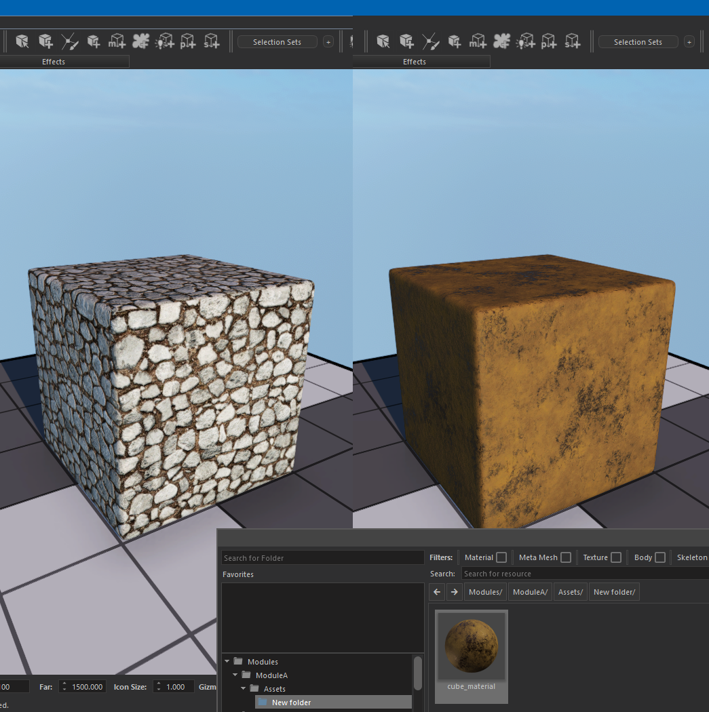
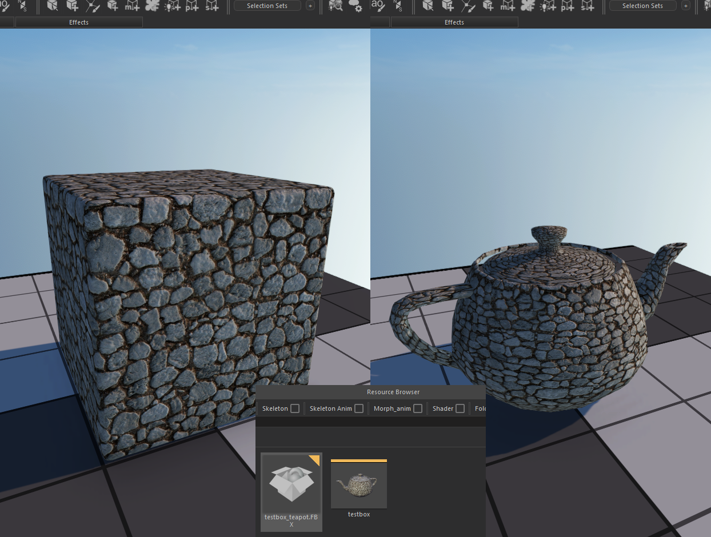
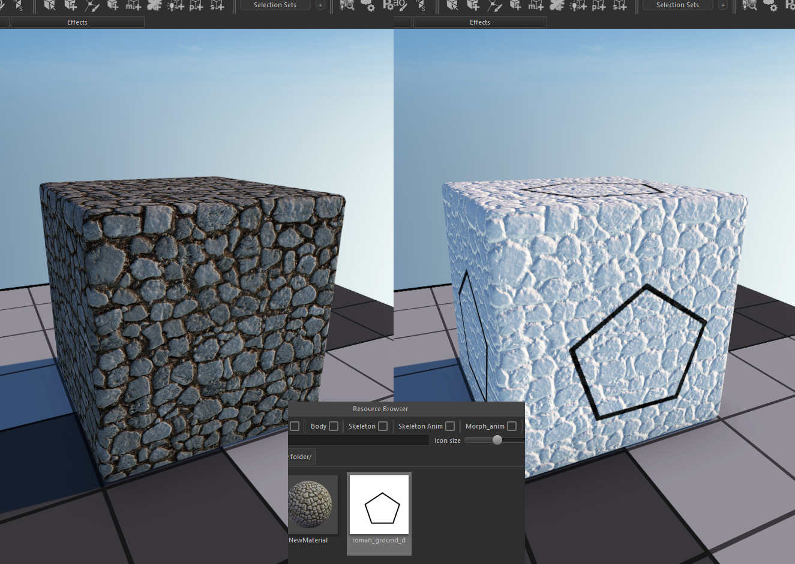
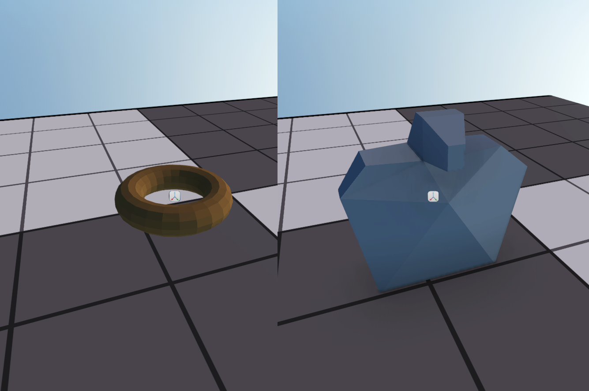

ADDING & OVERRIDING ASSETS
In RGL you can easily override existing assets or create new ones within the editor for your custom mode. Override mechanism works by replacing existing assets with the one you supplied in your module’s assets directory. It tries to match your custom assets with the ones previously registered by other modules by their names. This happens with respect to loading order of the modules.
If Module A and Module B are loaded in addition to the Native module respectively, list of final assets and their sources will be as follow:
| NATIVE | MODULE A | MODULE B | RESULT |
|---|---|---|---|
| adobe_wall tarnished_metal ground_mud marble - |
adobe_wall tarnished_metal - - metal_plate |
adobe_wall - ground_mud - - |
Module B::adobe_wall Module A::tarnished_metal Module B::ground_mud Native::marble Module A::metal_plate |
Currently moddable asset types are:
Folder Hierarchy
Asset system treats some folders in module directory specially according to their names. Here is the list of these folders and their uesages :
- Assets : Includes editable *.tpac files which stores meta data of each asset.
- AssetSources : Includes source files of imported assets(.psd, .fbx).
- AssetPackages : Includes read-only *.tpac files. It is generated when a module is packed for client builds.
- EmAssetPackages : Includes read-only *.tpac files. It is generated when a module is packed for editor builds.
- DsAssetPackages : Includes read-only *.tpac files. It is generated when a module is packed for server builds.
- RuntimeDataCache : Includes auto-generated data required by engine for each asset. Can be deleted but it might take time to generate from scratch during startup.
Modding Permissions
Asset system looks for different folders according to the version of game’s running executable. According to presence of these folders it decides whether a module can be modified or it can be used only in read-only mode. If you want to distribute your module you can pack your assets and share packed folders without distributing thousands of files and their sources. You have three options to pack your assets :
- Client : Others can activate your module to play. You must distribute AssetPackages folder.
- Editor : Others can use your module in editor but can not modify it. Used if you want others to derive modules from your module. You must distribute EmAssetPackages folder.
- Server : Used for server builds. All data which is not related to server is stripped out. You must distribute DsAssetPackages folder.
You can also share your module just like you are using it to allow others to modify it. In this case you must distribute Assets, AssetSources and optionally RuntimeDataCache folders.
Overriding Materials
Overriding materials can be done by creating a new material with the same name of the material you want to override. Navigate to assets directory of your module and right click on an empty place in the browser pane. Create a new material and rename it to the same name with the material you want to override.

At this point all material references in the system will be redirected to your custom material.
Overriding Meshes
Models can be imported from several file formats(e.g. Trf, Fbx). Resources imported from a single file are grouped by their names according to <>asset naming convetions<>. Imagine an fbx file as follow :
- Model.fbx
- wall(Mesh)
- wall.lod1(Mesh)
- wall.lod3(Mesh)
- bo_wall(Physics Shape)
According to asset naming conventions, first three resources will be grouped into a single mesh which has three submeshes belong to different LODs. At the end two asset will be imported from Model.fbx : wall(Mesh) and bo_wall(Physics shape).
By following these rules you can export a new geometry file(e.g. fbx) which contains a group of meshes with their names begin with wall. In this case a new wall mesh will be created from these submeshes and existing mesh will be replaced completely with the one you supplied. Name of the geometry file is not taken into account. It is worth to mention that mesh overrides occur on mesh level. It is not possible to override single submesh via module override.

Overriding Textures
Overriding textures is very similar to materials. You need to import a new texture with the same name of the texture you want to override. You can also rename any texture already imported to something that matches with the name of the texture to override.

Overriding Physics Shapes
Overriding physics shapes requires you to import a physics shape with the same name of asset you want to replace. Check <>Asset naming conventions<> to see hot to import physics shapes
